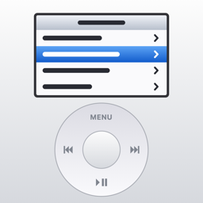

WheelwavePrivacy Policy
Last updated: 6 November 2026
Wheelwave does not collect your personal data. Nothing you do in the app is sent to the developer or to anyone else by the app.
What the app does not do
- It has no accounts or sign-in.
- It has no analytics, advertising, tracking or third-party SDKs.
- It has no servers, and it makes no network requests of its own.
- It does not share or sell any information.
Your music library
If you allow it, Wheelwave uses iOS's media library access to browse and play your music, including your Apple Music library if you use it. Song, album, artist and playlist details and artwork are read on your device to display them. They are not sent to the developer.
You can turn this access on or off at any time in the iOS Settings app, under Privacy & Security → Media & Apple Music.
Information kept on your device
Wheelwave saves a small amount of information locally so it can work the way you left it:
- your settings, such as device colour, screen theme, wheel sensitivity, shuffle and repeat;
- your place in the menus, including search result text if you left the app on that screen.
The developer can't access this. It stays on your device, may be included in your own device backups, and is removed when you delete the app.
Other device information
Wheelwave reads these on your device while it runs, and doesn't store or send them:
- battery level, to show the battery icon on screen;
- the current audio output's name, to show it in Settings;
- whether you are online, to explain why a song couldn't play.
Apple's services
Songs play through Apple's system music player, and Apple Music content and AirPlay are provided by Apple. Apple handles any data involved under its own privacy policy. If you download Wheelwave from the App Store, Apple may also give developers aggregated statistics, such as download numbers, and crash reports if you have chosen to share them. These are subject to Apple's terms.
Children
Wheelwave does not knowingly collect information from anyone, including children.
If you contact me
If you email about Wheelwave, your email address and message will be used only to reply to you.
Changes to this policy
If the app's handling of data changes, this page will be updated and the date above changed.
Contact
Questions about this policy: support@marktiddy.co.uk